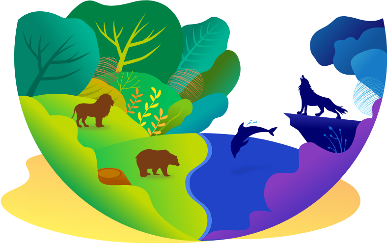

你的生理時鐘是哪種類型?
- 由全球僅163人、美國睡眠醫學委員會認證『臨床睡眠博士』親授!
- 生理時鐘影響了身體運作的各個方面
- 「最好」的時間點，早嵌在DNA之中

以下為博士列出的4種動物類型描述，你是哪一種呢？
-
海豚型
MORE
現實中的海豚睡覺半邊腦休息，另外半邊警醒。這個稱呼很適合失眠者：聰明、神經質而淺眠、睡眠驅力低。 -
狼型
MORE
現實中的狼總是在夜間出沒獵食，這個稱呼很適合越晚越精神、充滿創意、個性外向、睡眠驅力中等的人。 -
熊型
MORE
現實中的熊喜歡順其自然隨心遊逛。這個稱呼很適合喜歡日出而作日落而息、愛玩、睡眠驅力高的人。 -
獅型
MORE
現實中的獅子位於食物鏈的頂端，白天外出獵食。這個稱呼很適合睡眠驅力中等、晨型、有動力、樂觀的人。
要是你無法靠以上簡短的描述認出自己的類型，可以進行以下測驗
開始測驗